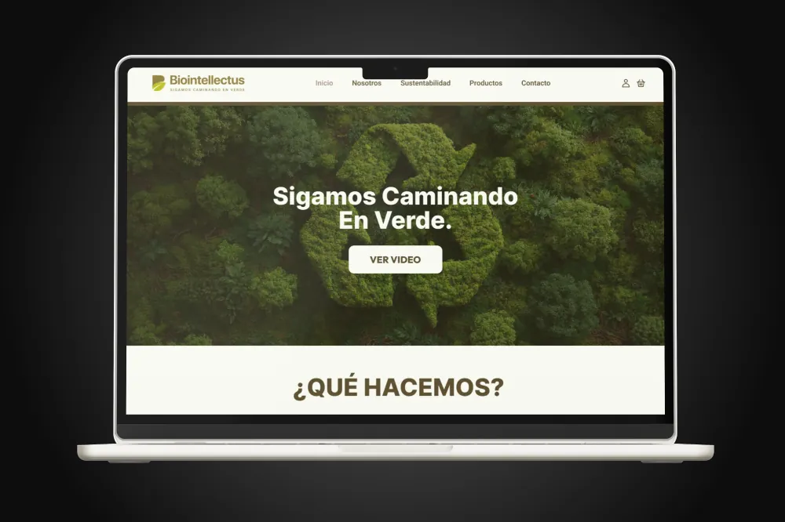
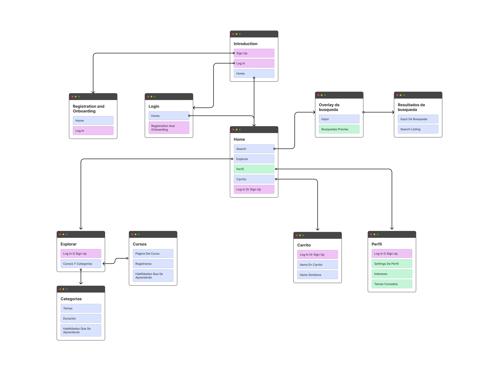
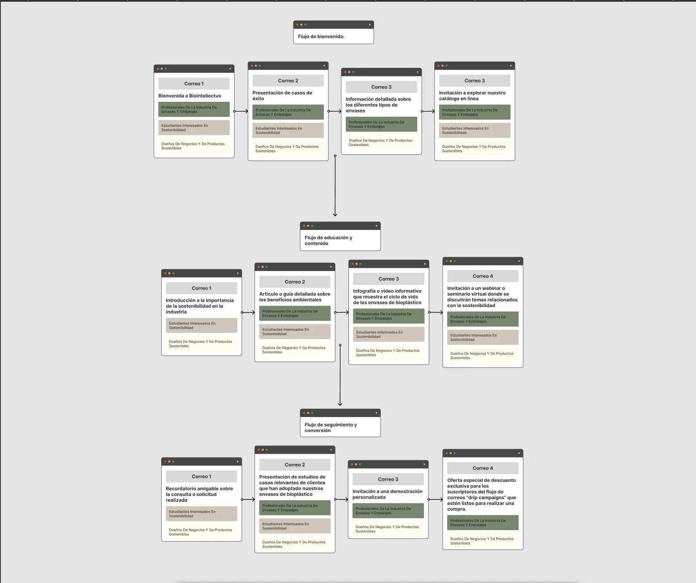
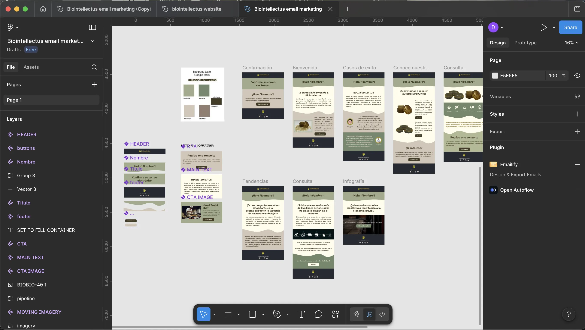
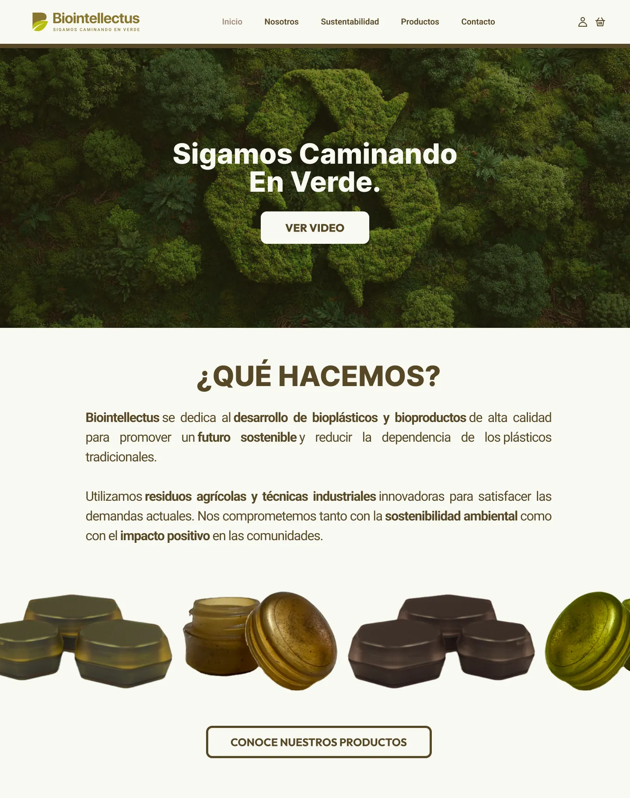
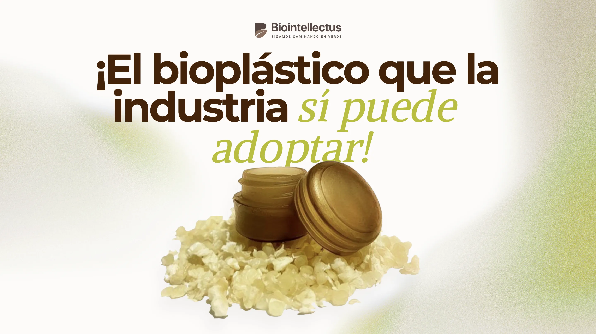
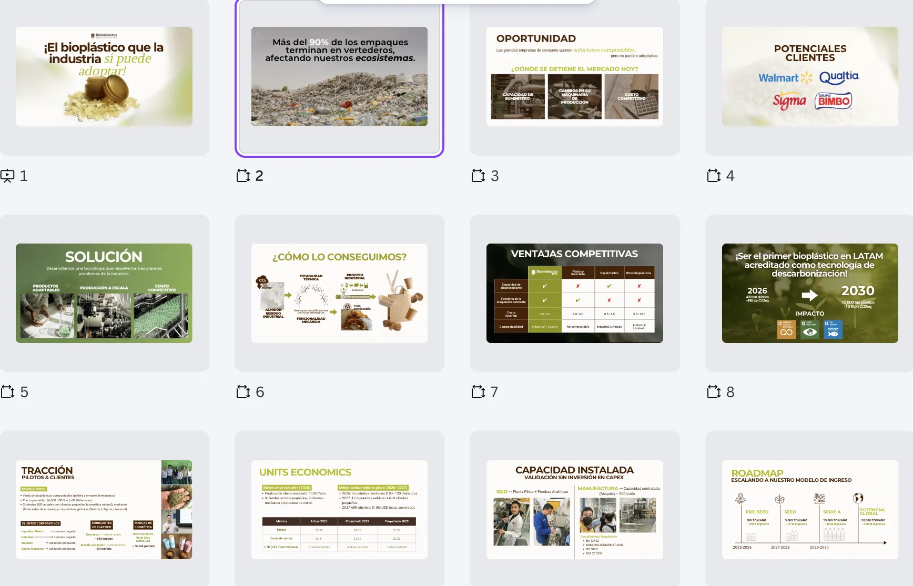

Biointellectus had a groundbreaking product — biomaterials made from agricultural waste that fully biodegrade in home compost — but their digital presence didn't reflect it. Their website and visual identity felt generic, failing to communicate the innovation and seriousness of what they were building.
The challenge was creating a design system from the ground up that could speak to two audiences at once: the beauty and cosmetics industry, and the sustainability-driven investors and partners they needed to grow.


Started with a full audit of their existing presence and mapped out a sitemap and user flows to restructure how people moved through their story. From there, built a complete design system — logo, submark, color palette, typography, and component library — grounded in the tension between natural materials and cutting-edge science.
With the system locked, moved into the website redesign — from wireframes through to high-fidelity UI. Designed email marketing pages and vector assets that extended the identity across every touchpoint consistently.



